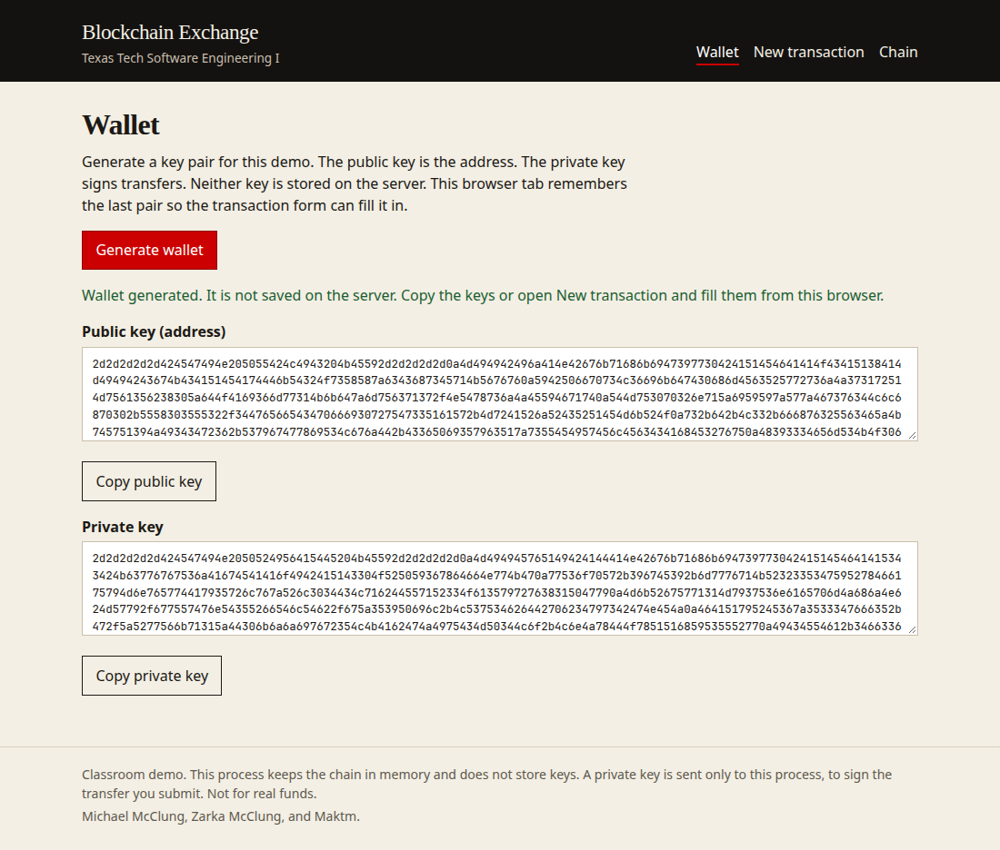
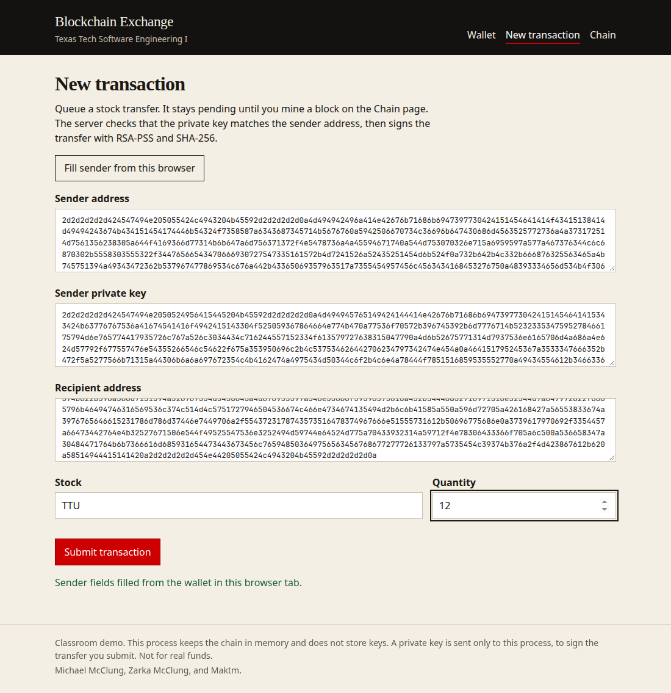
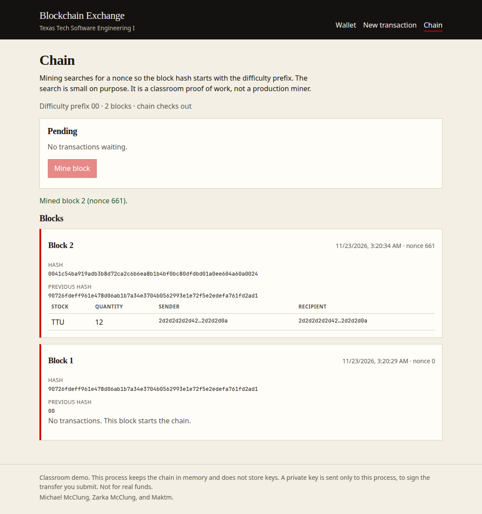

Wallet
Generate a key pair in this browser with Web Crypto (RSA-PSS, SHA-256, 2048 bits). The public key is the address. The private key never leaves this page. This tab remembers the last pair until you close it.
New transaction
Queue a stock transfer. The page signs it here, checks the signature, and holds it until you mine a block. Nothing is sent to a server.
Chain
Mining searches for a nonce so the block’s SHA-256 hash starts with 00. That is a classroom proof of work. The chain is saved in this browser’s localStorage.
Pending
Blocks
About this demo
This page is a browser version of the blockchain exchange from a Texas Tech Software Engineering I team project (about 2019–2020). It is not the Flask process. Signing uses the Web Crypto API. The chain stays in this browser. It does not connect to a market, and it is not for real funds.
The Python app you can run locally lives in the same repository and implements the same steps: create a wallet, submit a transfer, mine a block, and read the chain. The two chains are separate.
Virtual mouse
The other half of the original project is a desktop program. It is not in this page because it needs a webcam and it moves the real mouse pointer.
- It finds a face with dlib’s 68-point landmark model and reads the webcam.
- Holding the mouth open toggles pointer control. The nose is compared with an anchor point to move the cursor.
- Holding one eye closed clicks the left or right button. The camera image is mirrored, and the program swaps the eye landmarks so the wink matches that mirrored view.
- Holding both eyes closed toggles scroll mode. Esc quits.
- If the model file or the webcam is missing, the program exits and explains what to do. The model is downloaded from the dlib project and is not stored in the git repository.
Screenshots below are the Flask app running locally.



Credits
- Michael McClung — project and the original Tkinter launcher.
- Zarka McClung — virtual mouse (
face-control.py,utils.py). - Maktm (Michael Kiros) — 2019 Flask exchange, included with Michael McClung’s approval.
This repository
Original launcher and virtual mouse
Original exchange
dlib landmark model